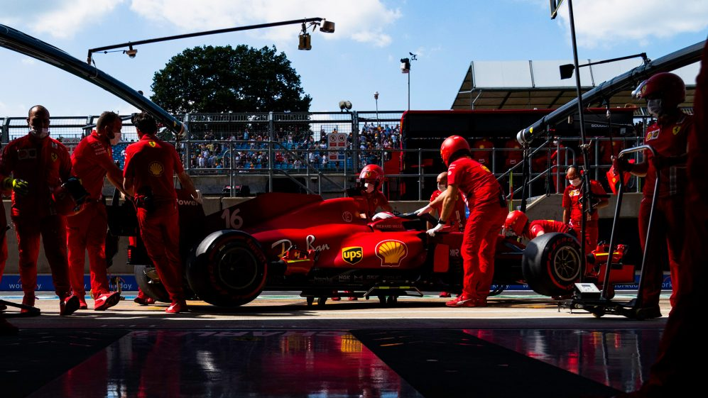

The Hungaroring is often dubbed ‘Monaco without the walls’ but Charles Leclerc has played down suggestions that this weekend he will spring a repeat of his shock home pole position – but accepted that Ferrari could be set for a “very, very positive” weekend in Hungary. Fresh from a British Grand Prix podium – which was almost a win but for Lewis Hamilton’s late pass for the lead – Leclerc has brushed away his disappointment and is targeting a midfield-topping race in Hungary. Monaco comparisons in mind, Leclerc was asked on Thursday whether he was brimming with confidence for ths weekend's race.
“I don’t reflect on it too much; I just started to focus on here, and that’s it - tried to forget what happened and obviously it was frustrating because the win was so close and to lose the win so close to the end helps,” he said. “But on the other hand, there’s plenty of positives: being on the pace of the Mercedes, especially in the first stint; the second stint went a bit more in line with what we expected – but all in all it’s been [Silverstone was] a very, very positive weekend for us,” he concluded.